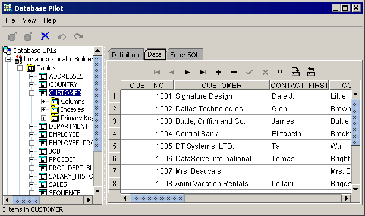

Database application development features vary by JBuilder edition
JBuilder provides a number of features to easily support the creation and maintenance of database applications.
DataExpress and dbSwing components are Borland value-added components. They are located on the UI designer's component palette and can be dropped onto your design surface. These components make it easy to connect to a database, retrieve data from a data source, save changes back to the data source, and manipulate the data. These components also provide international support.
JDataStore provides embedded database functionality in your applications with a single JDataStore file and the JDataStore JDBC driver (and its supporting classes). No server process is needed for local connections. In addition to industry-standard JDBC support, you can take advantage of the added convenience and flexibility of accessing JDataStore directly through the DataExpress API. You can use both types of access in the same application.
The Database Pilot is an all-Java, hierarchical database browser that also allows you to view, edit, insert, and delete data in tables. It presents JDBC-based meta-database information in a two-paned window. To display the Database Pilot, select Tools|Database Pilot.

For more information, see:
DataExpress Component Library Reference: Package com.borland.dbswing
DataExpress Component Library Reference: Package com.borland.dx.dataset
JDataStore Developer's Guide: Introduction
Developing Database Applications: Database administration tasks